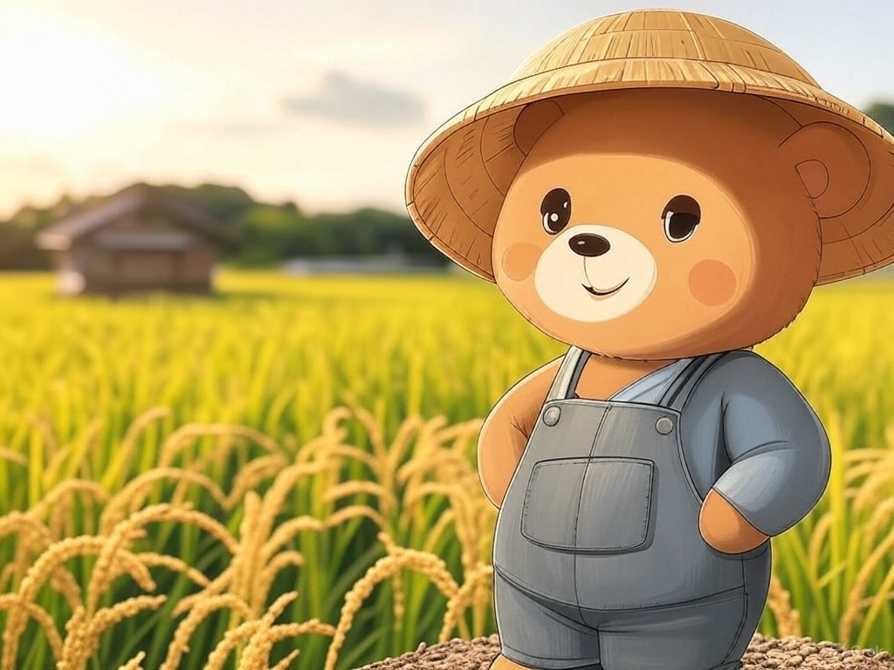

はじめまして
KumaTrekCode🐻のポートフォリオです。会社員としてプログラミングを学びながら、制作メモや試行錯誤をこのサイトに置いています。
自己紹介
こんにちは。KumaTrekCode🐻と申します。
アラフォーの会社員として、現在、プログラミングを学習中です。
動機は二つあります。ひとつは社内でのキャリアアップ。もうひとつは、場所を選ばない働き方の可能性を広げたいという思いです。その両方に向けて、日々プログラミングに取り組んでいます。
学びの途中はブログやXでも共有しています。いつか旅先でも力を発揮できる開発者になりたいと考えています。ご連絡はナビの X から DM でお気軽に。よろしくお願いします！